Há momentos, na história da humanidade em que uma descoberta, um evento, muda completamente o curso dos acontecimentos.
Assim ocorreu com a descoberta do fogo, o advento da escrita, a invenção da moeda e a descoberta da electricidade.
Agora é a vez da informática.
Antes de se começar a falar em informática é importante esclarecer o conceito de Informação.
Podemos dizer de uma forma simplista que a informação é constituida por dados com um determinado contexto. Por vezes esta distinção não é bem defenida já que normalente os dois conceitos são confundidos deste modo podemos referir que:
|
Exemplo de Dados |
Exemplo de Informação |
|
Luis; Pentium; Computador |
O Luis tem um computador Pentium |
|
123; 5; 1254 |
5 Computadores |
Desta forma, informática significa o tratamento da informação por meios automáticos.
Meios automáticos significam os dispositivos electrónicos (computadores ou sistemas informáticos)
Informação + Automática = Informática
De todas as máquinas que o homem inventou, uma se destacou, o computador.
Porém, o cérebro Humano é muito mais perfeito eficiente do que qualquer máquina de calcular, por mais sofisticada que seja. O único particular em que o homem é superado pelo computador é na velocidade de cálculo, provavelmente esse facto originou a mistificação da máquina. A busca de aparelhos para melhorar essa velocidade data de tempos imemoriais.
No entanto o aparecimento do computador é o resultante de uma evolução histórica; Para compreender-mos melhor o computador é necessário compreender a evolução que houve até o seu aparecimento.
Se tentarmos encontrar a origem das máquinas de calcular, sem sermos rigorosos demais quanto às características exigidas para que um aparelho se enquadre nessa categoria, poderemos retroceder vários milhares de anos, até chegarmos ao mais elementar dos instrumentos destinados a facilitar o cálculo: o Ábaco. Apesar da sua antiguidade continua a ser utilizado em alguns países da Ásia, onde teve a sua origem.
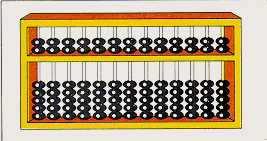
O ábaco é constituído por uma armação dividida verticalmente por várias colunas, a que fica mais à direita corresponde às unidades a seguinte às dezenas e assim sucessivamente. Em cada coluna estão cinco contas cada qual valendo um, separadas entre elas por uma barra horizontal aparecem em cada coluna mais duas contas, cada uma valendo cinco. Uma vez que a representação de um número mediante a movimentação das contas correspondente a todos os seus algarismos nas colunas apropriadas, poderemos somar a ele outro número, bastando por isso acumular algarismo por algarismo. Quando alguma das colunas chegar a dez contas, estas serão todas eliminadas, somando-se em seu lugar uma conta da coluna situada logo à esquerda ("Vai um").No século XVII Blaise Pascal, quando tinha somente 18 anos de idade, inventou uma máquina calculadora. Ela era constituída por um determinado número de rodas dentadas como as usadas nos relógios de funcionamento mecânico, de forma que, ao se rodar dez dentes da primeira roda, avançava um dente da segunda e assim sucessivamente. Evidentemente essa máquina era apenas uma melhoria do Ábaco e só servia para somar e subtrair, além disso a sua utilização era tão vagarosa que não apresentava nenhuma vantagem sobre o cálculo manual.
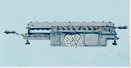
A máquina projectada por Blaise Pascal, porém serviu de base para uma outra, meio século mais tarde, foi construída pelo o matemático alemão Gottfried Wilhelm Von Leibnitz. Para além das somas e subtracções, também permitia multiplicações e divisões por somas sucessivas.As primeiras máquinas de calcular que foram comercializadas no século XIX tinham um sistema de funcionamento semelhante ao inventado por Gottfried Wilhelm Von Leibnitz. Durante este século o matemático inglês Charles Babbage deu um grande impulso no desenvolvimento das "máquinas matemáticas", como ele próprio as denominou. Ele dedicou toda a sua vida no desenvolvimento dessas máquinas e encontrou problemas insoluveis, já que na hora de executar na prática os seus projectos, deparou com grandes problemas que advinham de uma complexidade mecânica excessiva para época. No entanto a lógica usada por este matemático está na base dos princípios de funcionamento dos computadores modernos.
Contudo o passo decisivo para a construção de um computador foi dado por Von Neuman em 1944, ao propor que os programas fossem internos à máquina. O que foi possivel devido aos grandes avanços da electrónica na época.
Durante o ano de 1944 até a 1946 foí construído o primeiro computador electrónico utilizado para fins práticos, a que foi atribuido o nome de ENIAC. Como em grande parte dos casos as grandes evoluções efectuadas foi provocado por necessidades militares que surgiram na segunda guerra mundial.
Em 1951 apareceram os primeiros computadores fabricados em série.
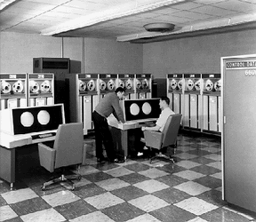
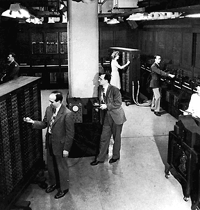
Actualmente todas as pessoas falam em computadores, sem saberem sequer o que é. O computador é apenas uma ferramenta poderosa que o homem inventou para o auxiliar em tarefas repetitivas e complexas. O computador pode realizar cálculos complexos muito mais rapidamente que homem e com muito poucos erros.
No entanto o computador é incapaz de fazer muitas coisas:
Hoje em dia os computadores auxiliam o homem em muitos tipos de trabalhos que seriam impossíveis ou que levariam muito tempo. Por exemplo para calcular a Órbita de um foguete são necessários várias centenas de anos para realizar os cálculos se fossem feitos com computadores comuns. No entanto os computadores na NASA fazem esses cálculos em poucas horas.
Aplicações da Informática:
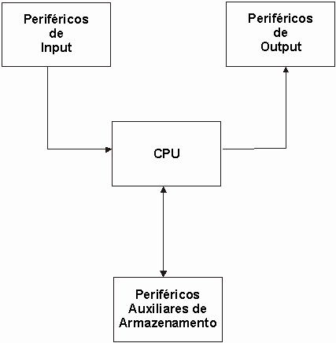
Podemos verificar que o computador possui um orgão fundamental, que constituí o centro nervoso do processamento que é designado por processador ou CPU e ainda um conjunto de periféricos de entrada de dados, de saída de dados e ainda outros para auxiliar algumas funções durante o processamento e aumentar a capacidade total de armazenamento, sendo conhecidos por periféricos auxiliares de armazenamento.
O processador ou CPU é o orgão central do computador e o principal responsável pelo desenrolar e pela coordenação do processamento.
A CPU é constituída por três unidades:
A função da ULA é efectuar operações sobre os dados introduzidos. Sobre os dados numéricos são feitas operações aritméticas (Somas, subtracções, multiplicações e divisões). Outra classe de operações possíveis são operações lógicas ou de comparação (< ; > ; = ; ¹ ; etc...) que se podem fazer sobre os dados numéricos.
A memória é orgão interno reutilizável, isto é, pode-se modificar o seu conteúdo face às necessidades do tratamento de informação.
As funções básicas da memória são as seguintes:
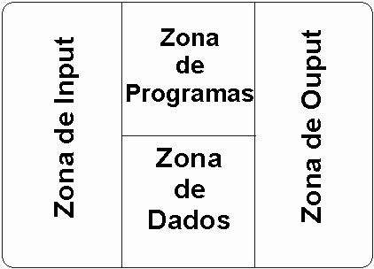
Zona de Input
Para aqui são enviados os dados dos periféricos de Input, até que o programa ordene a sua passagem.Zona de Output
Depois de tratados os dados, são passados para aqui onde ficam retidos até existir possibilidade de os enviar para os periféricos de Output.Zona de Programas
Aqui estão os programas que ordenam e interpretam o processamento.Zona de Trabalho (Dados)
Esta área funciona como armazenamento dos resultados intermédios. Face às noções apresentadas podemos concluir que a memória interna do computador é utilizada e reutilizada. Isto implica que por vezes é necessário limpar o seu conteúdo e substitui-lo por outros conforme as necessidades de trabalho. A este tipo de memórias denomina-se de RAM, e que devido às suas características se classifica de volátil, já que se falhar a energia, perde-se o seu conteúdo. No entanto existe um outro tipo memória, com funções auxiliares à RAM, denominada por ROM, que tem um carácter permanente (não volátil), e que por isso não podem ser usadas como memória principal, já que contêm programas indispensáveis ao seu funcionamento devendo ser por isso inalteráveis.Destina-se a controlar o fluxo de dados dentro da CPU e também para comunicar com os periféricos.
Uma outra função desta unidade é acompanhar a interpretação e a execução de instruções que compõem os programas desencadeando uma série de estímulos eléctricos que fazem reagir os vários elementos responsáveis pelo seu processamento.
A unidade de controlo tem então uma importância relevante, pois é ela que determina a velocidade de processamento e garante o controlo do funcionamento de todos os elementos do computador.
Para contabilizar existem unidades de medida do tempo representando fracções de segundos:
- Milissegundo (ms), milésima parte de um segundo
- Microsegundo (ms), milionésima parte de um segundo
- Nanosegundo (ns), bilionésima parte de um segundo
- Picosegundo (ps), trilionésima parte de um segundo
Periféricos de Input
Os dados codificados em ASCII ou em EBCDIC, têm de ser introduzidos no processador de alguma forma.
O dados são enviados para o computador por periféricos de INPUT. São estes que se encarregam de fazer a interpretação entre a nossa linguagem e a linguagem do computador (0;1).
Leitores ópticos
Estes leitores baseiam-se num processo de leitura que utilizam a reflexão da luz numa superfície, com elementos impressos em código próprio.
O modelo mais utilizado, usa o código de barras e está-se a tornar bastante popular em supermercados, farmácias, etc...
Teclado
É constituído por um número de teclas variáveis, conforme o fabricante e o modelo.
Alguns teclados possuem um conjunto de teclas programáveis, as teclas de função.
Joystick
Destina-se principalmente ao software de diversão, nomeadamente as consolas de jogos.
Rato
É um dispositivo de assinalação movido com uma mão numa superfície plana, os movimentos são comunicados ao computador, provocando os movimentos correspondentes do cursor no ecrã.
Periféricos de Output
É um meio através do qual é possível obter a informação, ou seja o resultado do processamento.
Impressoras
Impressoras de matriz (Agulhas).
Possuem uma cabeça móvel com electroimans, que comandados por impulsos eléctricos, controlam uma série de agulhas que provocarão um impacto marcando o papel através da fita.
Impressoras de térmicas.
São semelhantes às impressoras de matriz, a diferença reside no principio de funcionamento e no tipo de papel utilizado. Este papel já tem tinta impregnada, sendo por isso mais dispendioso.
Como não existe impacto, estas impressoras são muito silenciosas.
Impressoras de margaridas.
São impressoras que funcionam por impacto tal como as impressoras de agulhas. Tendo no entanto o principio de funcionamento um pouco diferente, a cabeça é constituída por um conjunto de pétalas como se duma flor se tratasse. Cada pétala tem desenhada um relevo um determinado carácter.
Produzem um letra com uma qualidade superior às impressoras analisadas anteriormente.
Impressoras de cabeça rotativa.
Estas impressoras são caracterizadas por uma alta qualidade de impressão. Possuem uma cabeça rotativa em forma de esfera ou cilindro que contem o desenho em relevo dos caracteres a imprimir.
Impressoras de Jacto de Tinta
Basicamente uma jacto de tinta é uma impressora matricial, com o impacto por meio de agulhas removido, que é substituído por envio de um jacto de tinta, que embate na folha de papel.
Devido a serem impressoras de não impacto, são impressoras muito silenciosas
Impressoras Laser
Funcionam com base na tecnologia laser, também utilizada nas fotocopiadoras. São impressoras de com grande rapidez de impressão e de alta qualidade.
Monitor
Periférico responsável pela visualização de imagem no sistema informático. A informação respeitante a uma determinada imagem começa a ser codificada em sinais digitais (Bits) antes de ser colocada no monitor através da placa de gráfica, que se encontra encaixada na placa mãe nos seus slots de expansão, o monitor encontra-se ligado a esta placa através de um cabo.
Data Show
Periférico que se liga ao computador através da mesma saída do monitor para projectar num ecrã externo as imagens do computador, utiliza-se em conferências, aulas, exposições, etc..
Periféricos auxiliares de armazenamento
Tipos de suportes magnéticos:
Características:
Os suportes magnéticos quando se compram têm que ser inicializados por programas próprios que são fornecidos pelo fabricante. Esta operação tem o nome de formatação ou inicialização. Durante a formatação o computador grava a informação indispensável.
No entanto só iremos referir os discos rígidos e as disquetes, já que são os mais divulgados
Discos rígidos
É formado por um prato metálico, revestido numa ou em ambas as partes por uma película de óxido ferroso magnetizável que permite a gravação dos programas ou dos dados.
O disco rígido está dividido em várias zonas:
Cabeçalho do disco - Zona que existe principalmente nos primeiros sectores do disco, que contem: - Data da última inicialização.
- Número de identificação do disco.
- Identificação do proprietário.
- Tipo de formatação utilizada
- Número total de sectores ou de bytes existentes no disco.
- Número de sectores ou de bytes para gravar.
Zona de pistas alternativas - Zona que contem pistas reservadas para a substituição que pistas que por qualquer motivo se danifiquem.
Directório do disco - É como se fosse o índice de um livro, a partir do qual é possível localizar os assuntos nele existentes.
Contêm informações sobre ficheiros gravados ao longo do disco, entre os quais:
Disquetes
Tem as mesmas características que os discos sendo mais lentas e com menos capacidade de armazenamento.
São constituídos por discos em matéria plástica flexível, revestidos por uma matéria de óxido ferroso magnetizável.
Tipos de disquetes:
- 5" 1/4
- 3" 1/2
Por sua vez cada tipo de disquetes está dividido em duas classes, as de alta densidade e as de baixa densidade, assim temos:
- 5" 1/4 HD
É uma disquete de 5 1/4 de alta densidade, o que significa que tem uma capacidade de armazenamento de 1220 Kb de informação.
- 5" 1/4 DD
É uma disquete de 5 1/4 de baixa densidade, o que significa que vai ter uma capacidade de armazenamento de 720 Kb de informação.
- 3" 1/2 HD
É uma disquete de 3 1/2 de alta densidade, o que significa que vai ter uma capacidade de armazenamento de 1440 Kb de informação.
- 3" 1/2 DD
É uma disquete de 3 1/2 de alta densidade, o que significa que vai ter uma capacidade de armazenamento de 720 Kb de informação.
Códigos internos de Armazenamento
(Como é que um computador guarda a informação).O computador possui uma memória interna onde guarda os dados e os programas, que consiste de um modo muito simplificado de um conjunto de caixas numeradas, as caixas podem ser entendidas por uma célula de memória e a sua numeração como o seu endereço, que a permite localizar.
O Computador não entende os símbolos que constituem a linguagem do homem, por isso esses símbolos terão que ser traduzidos de forma que o computador os entenda, e que esteja adaptado aos circuitos electrónicos que o constituem.
Basicamente os circuitos são um conjunto de vastos interruptores que ligam e desligam, a grande velocidade comandados pela unidade de controlo. Deixando passar ou não energia eléctrica para os outros circuitos dos sistema.
Assim o computador só distingue duas situações ou existe ou não existe corrente eléctrica. Em face disto o computador tem códigos que representam todos os símbolos necessários ao seu funcionamento que são baseados em dois símbolos, chamando-se por isso código binário. Os símbolos que o constituem são denominados por bits (0,1) devido à contracção do termo inglês Binary Digits (Dígitos Binários ).
Símbolos: 0 e 1Com estes dois elementos constroi-se uma numeração conhecida por numeração binária ou base dois que funciona da mesma forma que a numeração decimal.
No sistema decimal usamos 10 símbolos a que chamamos de algarismos decimais (0;1;2;3;4;5;6;7;8;9) e com estes algarismos podemos representar quantidades grandes ou pequenas. Neste sistema de numeração cada algarismo tem um peso.
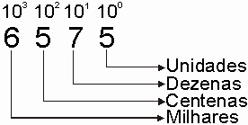
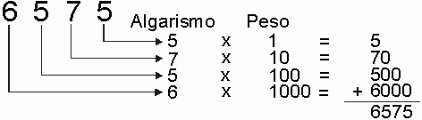
O sistema binário baseia-se no mesmo principio, com uma única diferença de termos 2 símbolos (0;1). Assim um número binário será sempre constituído por uma sequência de 0 e 1.
É importante saber-se converter a base binária para a correspondente base decimal, a fim de sabermos o seu valor decimal.
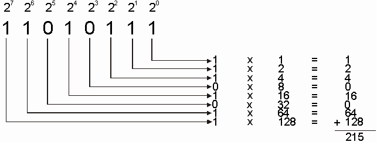
Vamos supor que se pretende encontrar o correspondente decimal de : 11010111Valor correspondente em decimal
Também existem métodos de converter um número decimal num número binário. Que é o método das divisões sucessivas, já que os números binários são de base 2 vamos dividir sucessivamente o número decimal por 2.
Exemplo: Passar de 50 em decimal para binário
|
50 |
2 |
||||
| 10 |
25 |
2 |
|||
|
0 |
05 |
12 |
2 |
||
|
1 |
0 |
6 |
2 |
||
|
0 |
3 |
2 |
|||
|
1 |
1 |
50 (Decimal) = 110010 (Binário)
Operações Binárias
Nos números binários também se podem realizar operações de soma, só que não temos 10 números décimais, mas sim 2 (0,1).
|
1 |
|
|
+ |
0 |
|
1 |
|
0 |
|
|
+ |
1 |
|
1 |
1
|
1 |
|
|
+ |
1 |
|
10 |
|
1 |
1 |
||||||||
|
1 |
0 |
1 |
0 |
1 |
|||||
|
+ |
1 |
1 |
0 |
0 |
1 |
||||
|
1 |
0 |
1 |
1 |
1 |
0 |
||||
O código binário tem no entanto alguns inconvenientes o de não permitir à partida determinar o número de binários que são necessários para representar um número decimal. O que levou a um desenvolvimento de um outro sistema que permitia saber com exactidão o número de bits necessários para representar um número decimal. Este código tem o nome de BCD (Binary Coded Decimal). Este código foi criado tomando por base que o maior número decimal precisa de 4 bits para ser representado (9=1001).
O sistema BCD usa 4 bits para representar qualquer número decimal.
|
DECIMAL |
BCD |
|
0 |
0000 |
|
1 |
0001 |
|
2 |
0010 |
|
3 |
0011 |
|
4 |
0100 |
|
5 |
0101 |
|
6 |
0110 |
|
7 |
0111 |
|
8 |
1000 |
|
9 |
1001 |
Exemplos de números codificados em BCD:
256 e 895
2 5 6
0010 0101 0110
8 9 5
1000 1001 0101
No entanto o sistema BCD tem grandes limitações, entre as quais as de só poder representar dados numéricos, já que com combinações de 4 bits só podemos representar 16 símbolos (24).
O uso do computador só como um elemento de cálculo tem pouco interesse, já que os computadores actualmente tratam dados numéricos e não numéricos. Face a isto foi definido que o numero de bits deveria de ser de 8 o que permitia uma combinação de 256 (28), o que permitia representar todos os símbolos utilizados na nossa escrita (algarismos, letras maiúsculas, letras minúsculas, símbolos de pontuação, etc...).
Devido ao que foi exposto um carácter passou a ser representado por 8 Bits, ou seja um Byte.
Apareceu duas versões deste código baseado na representação de caracteres por 8 bits, o EBCDIC (Extended Binary Coded Decimal Interchange Code) e o ASCII (American Standard Code for Information Interchange).
No entanto o código mais utilizado actualmente é o ASCII.
Medida da capacidade de armazenamento de memória.
Uma característica de um sistema informático é a sua capacidade em termos de memória – Primária e Secundária.
A capacidade da memória primária ou RAM é fundamental num sistema informático porque condiciona o tamanho máximo dos programas que podem correr nesse sistema. Desta forma, a capacidade de armazenamento da memória primária ou secundária (Discos, Disquetes, Tapes, CD-ROMs, etc..) mede-se em bytes ou em múltiplos de bytes.
Como em informática se trabalha com base no sistema binário, costumam-se fazer-se contagens tomando por base as potências de 2.
A unidade de medida Kilobyte não corresponde exactamente a 1000 bytes (como no kilograma que são 1000 gramas), mas sim a 1024 bytes, ou seja 210.
Face ao exposto devemos saber quantificar a capacidade de armazenamento num computador, que é medida em Bytes que nele se podem colocar. Assim, temos as seguintes unidades de medida da capacidade da memória:
1 Byte= 8 Bits
1 Kilobyte (Kb) = 1024 Bytes
1 Megabyte (Mb) = 1024 Kilobytes
1 Gigabyte (Gb) = 1024 Megabytes
1 Terabyte (Tb) = 1024 Gigabytes
Quando o computador está em funcionamento, o seu ritmo é comandado por um dispositivo electrónico, o relógio que funciona com um gerador de impulsos.
O número dos impulsos gerados pelo o relógio é medido em Hertz, mas devido às grandes velocidades dos processadores é medido em Megahertz (Milhões de impulsos por segundo).
O desempenho global de um processador não se avalia só pelos os ciclos do relógio, para isso temos uma unidade mais específica para avaliar o desempenho de um processador, os MIPS.
Características do Sistema Operativo
O software é o componente não físico que é responsável por fazer funcionar o Hardware num sistema informático, permitindo desta forma a realização de operações de interesse para os utilizadores.
O software de um sistema informático pode ser agrupado em duas categorias:
As funções que são atribuidas ao sistema operativo podem ser representadas da seguinte forma:
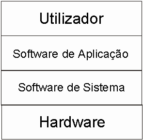
O sistema operativo é concebido em função da estrutura do processador, bus, memória e dispositivos de entrada e saída de um computador de forma a fazer que esses componentes funcionem e comuniquem entre sí.
Assim podemos dizer que o sistema operativo serve de interface entre o hardware e o software, estando por isso implicito o seguinte:
Exemplos de sistemas operativos:
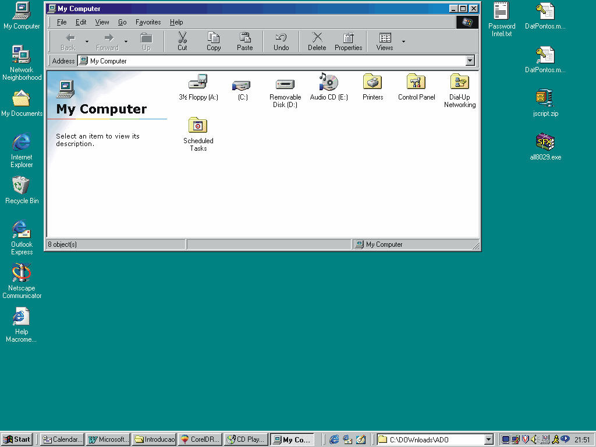